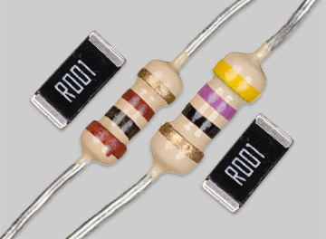
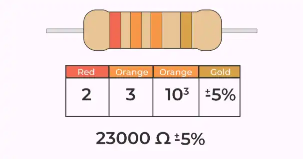

Resistor
រេសុីស្តង់គឺជាគ្រឿងអេឡិចត្រូនិចមួយដែលមាននាទីគ្រប់គ្រង់ចរន្តអគ្គិសនីដូចជាកាត់បន្ថយចរន្តនិងការពារសៀគ្វីផ្សេងៗកុំឲឆេះ។
Resistor is a component that controls and limits electronic flow like reducing current and protecting circuits from overheating.
| ពណ៌ / Color | Band | Band 1 | Band 2 | Band 3 (គុណ) | Band 4 |
|---|---|---|---|---|---|
| ខ្មៅ/black | 0 | 0 | x1 | ||
| ត្នោត/brown | 1 | 1 | x10 | 1% | |
| ក្រហម/red | 2 | 2 | x100 | 2% | |
| ទឹកក្រូច/orange | 3 | 3 | x1k | ||
| លឿង/yellow | 4 | 4 | x10k | ||
| បៃតង/green | 5 | 5 | x100k | 0.5% | |
| ខៀវ/blue | 6 | 6 | x1M | 0.25% | |
| Violet | 7 | 7 | x10M | 0.10% | |
| ប្រផេះ/grey | 8 | 8 | x100M | 0.05% | |
| ស/White | 9 | 9 | x1G | ||
| មាស/Gold | x0.1 | 5% | |||
| ប្រាក់/Silver | x0.01 | 10% |
